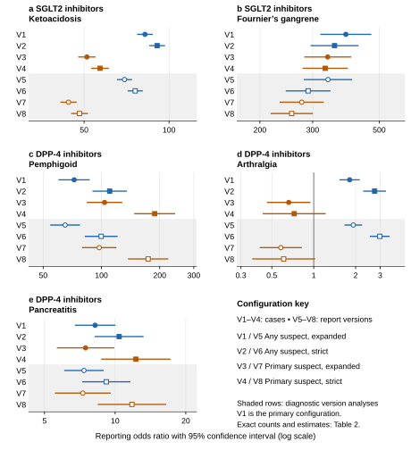
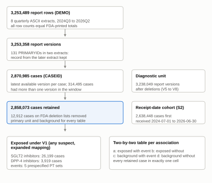
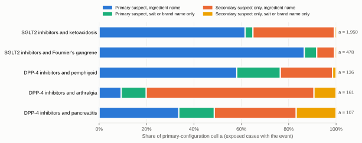

Pharmacovigilance methods study
Adverse-event reporting odds ratios under alternative case definitions
For DPP-4 inhibitors and arthralgia, counting secondary-suspect drug listings changed the reporting odds ratio from below 1 to above 1. I traced that change to the underlying reports, then compared drug-role, name-matching and counting rules across five drug-class and reaction pairs.
Question. For five drug-class and reaction pairs that FDA has already communicated (SGLT2 inhibitors with ketoacidosis and Fournier's gangrene; DPP-4 inhibitors with pemphigoid, arthralgia and pancreatitis), how far do reporting odds ratios move across eight prespecified ways of processing the same eight quarterly files? The configurations vary the counting unit, the reporter-designated drug role, and how drug names are matched to ingredients. The arthralgia definition is broader than the label warning about severe, disabling joint pain; severity was not assessed.

Which processing choices changed the estimates
- Drug role decided the direction for arthralgia. With any suspect role counted (primary configuration), DPP-4 inhibitors and arthralgia gave ROR 1.81 (1.55 to 2.12) from 161 cases. Counting only primary-suspect listings gave 0.66 (0.47 to 0.94) from 32 cases. Of the 129 cases that qualified only through a secondary-suspect listing, the median report listed 41 drugs and 83% listed 20 or more; primary-suspect cases had a median of 4.
- Name matching changed which reports counted as exposed. Exact ingredient matching missed 3,821 SGLT2 inhibitor cases and 1,798 DPP-4 inhibitor cases whose drug field carried a salt form (for example dapagliflozin propanediol, sitagliptin phosphate) or only a brand name. Those cases reported pemphigoid less often (1.3% against 5.3%), so adding them lowered the pemphigoid ROR from 110.3 to 72.3.
- Counting report versions inflated counts without changing conclusions. Treating each report version as a unit added 379,976 units to the database and, for ketoacidosis, 192 to cell a, and lowered that ROR from 82.2 to 69.5.
- Some pairs were robust to processing. Fournier's gangrene stayed between 330.3 and 386.9, and pancreatitis between 7.5 and 12.3, across the case-level configurations. Agreement across processing rules is not evidence of causation: these are reporting associations without exposure denominators.
Counts behind every estimate
Each table lists the four cells for one association under all twelve analyses: eight principal configurations (V1 to V8) and four secondary analyses (S1 deletion lists not applied, S2 cases first received in the window, S3 SGLT2 inhibitors versus DPP-4 inhibitors, S4 background without unverified same-class names). Except in S3, the background (c, d) contains the other retained reports in the database across all products. S3 uses the other study drug class as its comparator. Rows for V5 to V8 count report versions and are diagnostic.
| Configuration | a | b | c | d | ROR | 95% CI |
|---|---|---|---|---|---|---|
| V1 Case, suspect, expanded (primary) | 1,950 | 24,249 | 2,769 | 2,829,105 | 82.16 | 77.43 to 87.18 |
| V2 Case, suspect, strict | 1,871 | 20,507 | 2,848 | 2,832,847 | 90.75 | 85.47 to 96.36 |
| V3 Case, primary suspect, expanded | 1,266 | 20,307 | 3,453 | 2,833,047 | 51.15 | 47.89 to 54.63 |
| V4 Case, primary suspect, strict | 1,201 | 17,007 | 3,518 | 2,836,347 | 56.93 | 53.23 to 60.89 |
| V5 Report version, suspect, expanded (diagnostic) | 2,142 | 31,181 | 3,163 | 3,201,563 | 69.53 | 65.75 to 73.54 |
| V6 Report version, suspect, strict (diagnostic) | 2,032 | 26,235 | 3,273 | 3,206,509 | 75.88 | 71.70 to 80.30 |
| V7 Report version, primary suspect, expanded (diagnostic) | 1,420 | 26,613 | 3,885 | 3,206,131 | 44.03 | 41.39 to 46.85 |
| V8 Report version, primary suspect, strict (diagnostic) | 1,325 | 22,184 | 3,980 | 3,210,560 | 48.18 | 45.21 to 51.34 |
| S1 deletion lists not applied | 1,955 | 24,367 | 2,787 | 2,841,876 | 81.81 | 77.11 to 86.80 |
| S2 cases first received in the window | 1,853 | 23,601 | 2,553 | 2,610,441 | 80.28 | 75.52 to 85.34 |
| S4 background without unverified -gliflozin/-gliptin names | 1,950 | 24,249 | 2,739 | 2,827,582 | 83.02 | 78.23 to 88.10 |
| S3 SGLT2 inhibitors versus DPP-4 inhibitors | 1,685 | 23,053 | 41 | 2,872 | 5.12 | 3.75 to 7.00 |
| Configuration | a | b | c | d | ROR | 95% CI |
|---|---|---|---|---|---|---|
| V1 Case, suspect, expanded (primary) | 478 | 25,721 | 136 | 2,831,738 | 386.95 | 319.71 to 468.33 |
| V2 Case, suspect, strict | 450 | 21,928 | 164 | 2,835,531 | 354.82 | 296.59 to 424.48 |
| V3 Case, primary suspect, expanded | 439 | 21,134 | 175 | 2,836,325 | 336.67 | 282.41 to 401.35 |
| V4 Case, primary suspect, strict | 414 | 17,794 | 200 | 2,839,665 | 330.34 | 278.86 to 391.33 |
| V5 Report version, suspect, expanded (diagnostic) | 525 | 32,798 | 152 | 3,204,574 | 337.47 | 281.64 to 404.37 |
| V6 Report version, suspect, strict (diagnostic) | 484 | 27,783 | 193 | 3,209,589 | 289.71 | 245.08 to 342.46 |
| V7 Report version, primary suspect, expanded (diagnostic) | 476 | 27,557 | 201 | 3,209,815 | 275.84 | 233.81 to 325.42 |
| V8 Report version, primary suspect, strict (diagnostic) | 438 | 23,071 | 239 | 3,214,301 | 255.33 | 217.98 to 299.07 |
| S1 deletion lists not applied | 479 | 25,843 | 136 | 2,844,527 | 387.67 | 320.32 to 469.18 |
| S2 cases first received in the window | 464 | 24,990 | 119 | 2,612,875 | 407.68 | 333.19 to 498.83 |
| S4 background without unverified -gliflozin/-gliptin names | 478 | 25,721 | 133 | 2,830,188 | 395.46 | 326.20 to 479.43 |
| S3 SGLT2 inhibitors versus DPP-4 inhibitors | 448 | 24,290 | 2 | 2,911 | 26.84 | 6.69 to 107.73 |
| Configuration | a | b | c | d | ROR | 95% CI |
|---|---|---|---|---|---|---|
| V1 Case, suspect, expanded (primary) | 136 | 3,783 | 1,419 | 2,852,735 | 72.27 | 60.44 to 86.42 |
| V2 Case, suspect, strict | 112 | 2,009 | 1,443 | 2,854,509 | 110.28 | 90.55 to 134.32 |
| V3 Case, primary suspect, expanded | 104 | 1,972 | 1,451 | 2,854,546 | 103.75 | 84.62 to 127.21 |
| V4 Case, primary suspect, strict | 79 | 811 | 1,476 | 2,855,707 | 188.47 | 148.76 to 238.77 |
| V5 Report version, suspect, expanded (diagnostic) | 149 | 4,366 | 1,699 | 3,231,835 | 64.92 | 54.76 to 76.95 |
| V6 Report version, suspect, strict (diagnostic) | 122 | 2,293 | 1,726 | 3,233,908 | 99.69 | 82.59 to 120.32 |
| V7 Report version, primary suspect, expanded (diagnostic) | 110 | 2,102 | 1,738 | 3,234,099 | 97.38 | 79.94 to 118.63 |
| V8 Report version, primary suspect, strict (diagnostic) | 81 | 851 | 1,767 | 3,235,350 | 174.28 | 138.11 to 219.92 |
| S1 deletion lists not applied | 138 | 3,837 | 1,422 | 2,865,588 | 72.48 | 60.68 to 86.56 |
| S2 cases first received in the window | 126 | 3,300 | 1,300 | 2,633,722 | 77.35 | 64.22 to 93.17 |
| S4 background without unverified -gliflozin/-gliptin names | 136 | 3,783 | 1,365 | 2,851,036 | 75.09 | 62.78 to 89.82 |
| S3 DPP-4 inhibitors versus SGLT2 inhibitors | 119 | 2,794 | 23 | 24,715 | 45.77 | 29.24 to 71.64 |
| Configuration | a | b | c | d | ROR | 95% CI |
|---|---|---|---|---|---|---|
| V1 Case, suspect, expanded (primary) | 161 | 3,758 | 65,942 | 2,788,212 | 1.81 | 1.55 to 2.12 |
| V2 Case, suspect, strict | 129 | 1,992 | 65,974 | 2,789,978 | 2.74 | 2.29 to 3.27 |
| V3 Case, primary suspect, expanded | 32 | 2,044 | 66,071 | 2,789,926 | 0.66 | 0.47 to 0.94 |
| V4 Case, primary suspect, strict | 15 | 875 | 66,088 | 2,791,095 | 0.72 | 0.43 to 1.21 |
| V5 Report version, suspect, expanded (diagnostic) | 222 | 4,293 | 84,581 | 3,148,953 | 1.93 | 1.68 to 2.20 |
| V6 Report version, suspect, strict (diagnostic) | 179 | 2,236 | 84,624 | 3,151,010 | 2.98 | 2.56 to 3.47 |
| V7 Report version, primary suspect, expanded (diagnostic) | 34 | 2,178 | 84,769 | 3,151,068 | 0.58 | 0.41 to 0.81 |
| V8 Report version, primary suspect, strict (diagnostic) | 15 | 917 | 84,788 | 3,152,329 | 0.61 | 0.37 to 1.01 |
| S1 deletion lists not applied | 164 | 3,811 | 66,674 | 2,800,336 | 1.81 | 1.55 to 2.11 |
| S2 cases first received in the window | 97 | 3,329 | 52,738 | 2,582,284 | 1.43 | 1.17 to 1.75 |
| S4 background without unverified -gliflozin/-gliptin names | 161 | 3,758 | 65,925 | 2,786,476 | 1.81 | 1.55 to 2.12 |
| S3 DPP-4 inhibitors versus SGLT2 inhibitors | 49 | 2,864 | 198 | 24,540 | 2.12 | 1.55 to 2.91 |
| Configuration | a | b | c | d | ROR | 95% CI |
|---|---|---|---|---|---|---|
| V1 Case, suspect, expanded (primary) | 107 | 3,812 | 9,721 | 2,844,433 | 8.21 | 6.77 to 9.96 |
| V2 Case, suspect, strict | 73 | 2,048 | 9,755 | 2,846,197 | 10.40 | 8.23 to 13.15 |
| V3 Case, primary suspect, expanded | 52 | 2,024 | 9,776 | 2,846,221 | 7.48 | 5.68 to 9.86 |
| V4 Case, primary suspect, strict | 36 | 854 | 9,792 | 2,847,391 | 12.26 | 8.78 to 17.12 |
| V5 Report version, suspect, expanded (diagnostic) | 113 | 4,402 | 11,231 | 3,222,303 | 7.37 | 6.10 to 8.89 |
| V6 Report version, suspect, strict (diagnostic) | 75 | 2,340 | 11,269 | 3,224,365 | 9.17 | 7.28 to 11.55 |
| V7 Report version, primary suspect, expanded (diagnostic) | 55 | 2,157 | 11,289 | 3,224,548 | 7.28 | 5.57 to 9.52 |
| V8 Report version, primary suspect, strict (diagnostic) | 37 | 895 | 11,307 | 3,225,810 | 11.79 | 8.48 to 16.39 |
| S1 deletion lists not applied | 107 | 3,868 | 9,796 | 2,857,214 | 8.07 | 6.65 to 9.79 |
| S2 cases first received in the window | 98 | 3,328 | 8,848 | 2,626,174 | 8.74 | 7.14 to 10.70 |
| S4 background without unverified -gliflozin/-gliptin names | 107 | 3,812 | 9,716 | 2,842,685 | 8.21 | 6.77 to 9.96 |
| S3 DPP-4 inhibitors versus SGLT2 inhibitors | 61 | 2,852 | 262 | 24,476 | 2.00 | 1.51 to 2.65 |
a: exposed cases with the event; b: exposed without; c: all other cases with the event; d: all other cases without. In S3, c and d are DPP-4 inhibitor cases for SGLT2 pairs and SGLT2 inhibitor cases for DPP-4 pairs, and cases listing both classes are excluded. The filter only hides tables; it does not recompute anything.
Data and methods
The input is the eight most recent FDA quarterly ASCII extracts on the retrieval date (2024Q3 to 2026Q2; 514 MB compressed, 15,069,684 drug rows and 11,287,724 reaction rows). Parsed counts matched raw line counts for all 40 member files. They also matched FDA's printed totals for the 32 files that supplied them; the eight deletion lists had no printed total. Reports were collapsed to cases using FDA's documented case and version keys: the latest available version of each CASEID within these eight files, after removing 12,912 cases on FDA's deletion lists. "Latest" means latest in the acquired files, not latest at FDA.
Drug classes came from FDA label classes and MED-RT mechanisms via RxClass, giving six SGLT2 inhibitors and four DPP-4 inhibitors. Reaction terms are exact MedDRA preferred-term strings fixed in the analysis plan before any count was computed. The principal configurations use a database-wide background built before restriction to a drug class. In secondary analysis S3, the comparator is the other study drug class, with cases listing both classes excluded. The measure is the reporting odds ratio with a Woolf interval; estimates need at least 3 exposed cases with the event and no empty cell.

Drug roles and name matching
Which drug roles count as exposure. FDA's files mark each drug as primary suspect, secondary suspect, concomitant, interacting, or (from the 2024Q4 file onward) not administered. A secondary-suspect listing is part of the reporter's suspicion, but some reports list dozens of suspect drugs. The primary configuration counts both suspect roles; the primary-suspect configurations show what that inclusion contributes.
How strictly names are matched. FDA's ingredient field often carries salt forms, and some reports give only a brand name. The strict rule requires the exact ingredient name. The expanded rule adds salt forms and brand names that RxNav relates to a class member. Strings that match neither stay unmapped and are listed for review.

Limitations
- Spontaneous reports have no exposure denominator, are affected by stimulated and selective reporting, and cannot show that a drug caused an event. None of the estimates is a risk, an incidence, or a ranking of drugs.
- Collapsing by CASEID does not remove duplicates that FDA has not linked, such as a direct report and a manufacturer report of the same patient. No probabilistic duplicate detection was attempted.
- The window holds only versions received in eight quarters. 667,511 retained cases are represented by a follow-up whose earlier versions predate the window; a separate analysis restricted to cases first received in the window is reported.
- Reaction terms are exact preferred-term strings without the MedDRA hierarchy, so related terms outside the lists are not counted. The lists were fixed before results and were not changed.
- The descriptive profiles that explain the role and mapping effects were added after the first results were seen, and are labelled post hoc.
Reproduce
The source archive contains the pipeline (Python and DuckDB SQL), configuration, frozen RxNav responses, tests, and documentation. On macOS or Linux with Python 3.11 or later:
python3 -m venv .venv && .venv/bin/pip install -r requirements.lock && .venv/bin/pip install -e .
.venv/bin/python -m pytest -q # software tests on synthetic fixtures
.venv/bin/aesens demo # fast end-to-end run on the synthetic fixture
.venv/bin/aesens all # full study: downloads about 514 MB from FDAThe demo uses invented records to show the pipeline works; it is not evidence about any drug. On the test machine the full build took about a minute and the analysis a few seconds; see the runtime manifest in the archive.
Report and downloads
- Source archive (code, SQL, configuration, tests, documentation)
- Aggregate results workbook with definitions sheet
- All configurations, long format (one row per association and configuration)
- Analysis plan with dated amendments
- Reaction term provenance
- Verified drug names (RxNav snapshot)
- Data dictionary
- Release compatibility table
- Supplementary material (tables S1 to S8)